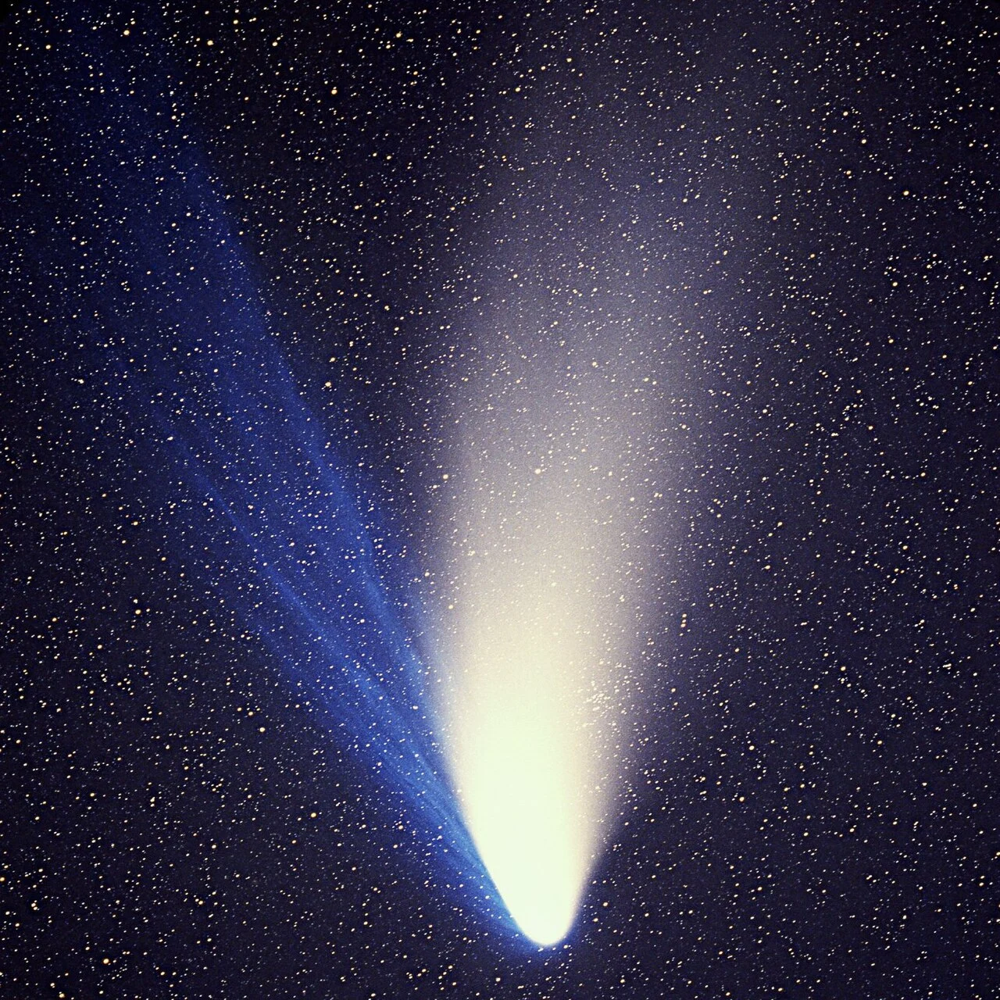

Bola Es Berdebu Penjelajah Tata Surya
Komet adalah benda kecil Tata Surya yang sebagian besar terdiri dari campuran es air, gas terbekukan (seperti karbon monoksida, karbon dioksida, dan metana), debu, serta material batuan silikat. Berasal dari kawasan dingin Tata Surya luar seperti Sabuk Kuiper dan Awan Oort, komet sering kali disebut sebagai "bola salju kotor". Saat orbitnya yang sangat eliptis membawa komet mendekati Matahari, radiasi surya menyebabkan es menyublim secara spontan. Proses ini membentuk atmosfer sementara yang sangat luas berupa selubung gas dan debu yang disebut koma, serta dua ekor spektakuler yang terdorong menjauhi Matahari akibat angin surya dan tekanan radiasi.